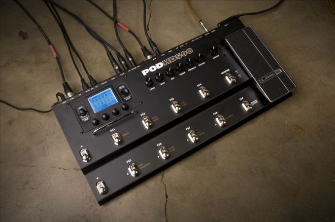

LINE 6 POD HD500
HD amp models defy the accepted standard. They feel, behave, and interact with previously unachievable realism.
Creating these new HD amp models was no small feat. Line 6 mixed 15 years of amp modeling experience with 3 years of new research and development to build an entirely new amp modeling technology from the ground up. During that time, we hunted down 16 incredible amplifiers and—with the help of LA's top tube amp experts—restored each one back to peak condition. The new modeling technology uses 10 times more amplifier information than before, including single-ended class A tube stages, class AB push/pull interactions, power supply behavior, and more. The result is a high-quality warmth, feel, sustain, and articulation for you to fall in love with.
Tube amp fanatics have long enthused that their favorite stacks and combos aren't merely "amps," but instruments themselves, with playability equal to that of the guitar plugged into them. New HD modeling takes the POD HD experience to that same exalted level, capturing the genuine playability that great guitarists demand.
Your amp collection—now in HD
On the POD HD500's menu is a collection of freshly modeled amps, many of which are brand-new to POD, and all of which are essential for performing guitarists who require a wide variety of tones in one streamlined, multi-FX-sized package.
LINE 6 POD HD500 Specifications:
o HD amp models that feel, behave, and interact with previously unachievable realism for an entirely new playing experience
o 16 HD amp models based on the most sought-after guitar tones: California cleans, classic crunch, vibey boutique warmth, modern high-gain, and more
o 100+ effects including delays, modulations, distortions, compressors, EQs, filters, and reverbs; Up to 8 simultaneous FX; Tap tempo
o 512 user-writable preset locations
o 48-second looper with dedicated footswitches for Undo, Play Once, Pre/Post, Rec/Overdub, Play/Stop, Half Speed, and Reverse
o Built-in tuner with signal mute
o 1/4" and XLR outputs (mono/stereo); MIDI in, out/thru; S/PDIF out; USB; L6 LINK; FX loop (mono/stereo); 1/4" aux in; XLR mic in with mic level; 1/4" headphone output; Variax VDI connection; External expression pedal input
o Free editor/librarian software
o Bent sheet metal chassis, metal footswitches and expression pedal.